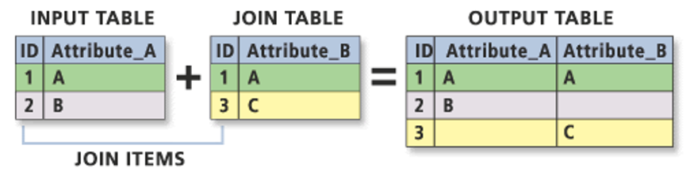

2 R for Spatial Analysis
2.1 Loading spatial data
Open a new script within your Geospatial-Workshop24 project and save this as 02-language-maps.r. We will start again by loading the libraries that we will need. You have been introduced to the tidyverse library last session, but now we are adding the sf library to read and load our spatial data as well as the tmap library to visualise our spatial data:
R code
# load libraries
library(tidyverse)
library(sf)
library(tmap)We will continue working with the csv dataset that we prepared and saved in the previous session, so let us make sure it is loaded properly:
R code
# load data
att <- read_csv("data/attributes/sa-language.csv")Rows: 878 Columns: 3
── Column specification ────────────────────────────────────────────────────────
Delimiter: ","
dbl (3): sp_code, sp_pop, sp_xhosa
ℹ Use `spec()` to retrieve the full column specification for this data.
ℹ Specify the column types or set `show_col_types = FALSE` to quiet this message.You can further inspect the results using the View() function.
Next, we need a corresponding spatial dataset that contains the Cape Town’s sub places and save it in your data/spatial folder.
| File | Type | Link |
|---|---|---|
| Cape Town Sub Places | GeoPackage |
Download |
You may have used spatial data before and noticed that we did not download a collection of files known as a shapefile but a GeoPackage instead. Whilst shapefiles are still being used, GeoPackage is a more modern and portable file format. Have a look at this article on towardsdatascience.com for an excellent explanation on why one should use GeoPackage files over shapefiles where possible: [Link]
Let us load the file and store it into an object called cpt. We can do this as follows:
R code
# load data
cpt <- st_read("data/spatial/subplace-cape-town-2013.gpkg")Reading layer `subplace-cape-town-2013' from data source
`/Users/justinvandijk/Library/CloudStorage/Dropbox/UCL/Web/jtvandijk.github.io/SA-TIED/data/spatial/subplace-cape-town-2013.gpkg'
using driver `GPKG'
Simple feature collection with 921 features and 16 fields
Geometry type: MULTIPOLYGON
Dimension: XY
Bounding box: xmin: -64020.67 ymin: -3803551 xmax: 430.9835 ymax: -3705149
Projected CRS: WGS_1984_Transverse_MercatorYou should also see the cpt variable appear in your environment window.
2.2 Exploring spatial data
As this is the first time we have loaded spatial data into R, let’s go for a little exploration of how we can interact with our spatial dataframe. The first thing we want to do when we load spatial data is to quickly plot the data to check whether everything is in order. To do this, we can use the same function we used before: plot().
R code
# plot data
plot(cpt, max.plot = 1)
You should see your cpt plot appear in your Plots window.
The plot() function should not to be used to make publishable maps but can be used as a quick way of inspecting your spatial data.
Just as with a tabular dataframe, we can inspect the spatial data frame:
R code
# inspect columns
ncol(cpt)[1] 17# inspect rows
nrow(cpt)[1] 921# inspect data
head(cpt)Simple feature collection with 6 features and 16 fields
Geometry type: MULTIPOLYGON
Dimension: XY
Bounding box: xmin: -28165.99 ymin: -3763492 xmax: -25397.68 ymax: -3761237
Projected CRS: WGS_1984_Transverse_Mercator
sp_code sp_name mp_code mp_name mn_mdb_c mn_code mn_name
1 199035011 Greenfield 199035 Blue Downs CPT 199 City of Cape Town
2 199035012 Wesbank 199035 Blue Downs CPT 199 City of Cape Town
3 199035013 Kleinvlei 199035 Blue Downs CPT 199 City of Cape Town
4 199035014 Palm Park 199035 Blue Downs CPT 199 City of Cape Town
5 199035015 Park Village 199035 Blue Downs CPT 199 City of Cape Town
6 199035016 Hill View 199035 Blue Downs CPT 199 City of Cape Town
dc_mdb_c dc_mn_c dc_name pr_mdb_c pr_code pr_name albers_are
1 CPT 199 City of Cape Town WC 1 Western Cape 0.3061520
2 CPT 199 City of Cape Town WC 1 Western Cape 1.0037679
3 CPT 199 City of Cape Town WC 1 Western Cape 0.7925992
4 CPT 199 City of Cape Town WC 1 Western Cape 0.6029142
5 CPT 199 City of Cape Town WC 1 Western Cape 0.4050055
6 CPT 199 City of Cape Town WC 1 Western Cape 0.1587553
shape_leng shape_area geom
1 0.02507468 2.986940e-05 MULTIPOLYGON (((-27674.79 -...
2 0.05302850 9.794070e-05 MULTIPOLYGON (((-27165.44 -...
3 0.04533365 7.733431e-05 MULTIPOLYGON (((-26251.72 -...
4 0.03277084 5.883012e-05 MULTIPOLYGON (((-25852.91 -...
5 0.02499933 3.951954e-05 MULTIPOLYGON (((-26300.9 -3...
6 0.01980995 1.549123e-05 MULTIPOLYGON (((-26748.16 -...# inspect column names
names(cpt) [1] "sp_code" "sp_name" "mp_code" "mp_name" "mn_mdb_c"
[6] "mn_code" "mn_name" "dc_mdb_c" "dc_mn_c" "dc_name"
[11] "pr_mdb_c" "pr_code" "pr_name" "albers_are" "shape_leng"
[16] "shape_area" "geom" We can also again establish the class of our data:
R code
# inspect
class(cpt)[1] "sf" "data.frame"We should see our data is an sf dataframe, which is what we want and we can move on.
2.3 Joining attribute data
We now have our language dataset (att) with the number of isiXhosa speakers in Cape Town, organised by sub place, as well as a spatial dataset containing the boundaries of these sub places (cpt). We can now join this table data to our spatial data using an Attribute Join.
An attribute join links two datasets based on a common attribute, enabling the ‘matching’ of rows between them.
To perform a successful join, each dataset must contain a unique identifying (UID) field. This could be a code, a name, or any other consistent identifier. It is crucial that the ID field is accurate across both datasets, with no typos or inconsistencies (e.g., “City of Cape Town” is not the same as “The City of Cape Town”). Whenever possible, it is preferable to use unique codes rather than names, as codes reduce the likelihood of errors and mismatches.
Before proceeding with the join, we need to verify that a matching UID exists in both datasets. Let’s look at the column names in our datasets again:
R code
# inspect column names
names(att)[1] "sp_code" "sp_pop" "sp_xhosa"# inspect column names
names(cpt) [1] "sp_code" "sp_name" "mp_code" "mp_name" "mn_mdb_c"
[6] "mn_code" "mn_name" "dc_mdb_c" "dc_mn_c" "dc_name"
[11] "pr_mdb_c" "pr_code" "pr_name" "albers_are" "shape_leng"
[16] "shape_area" "geom" The sp_code columns looks promising as it features in both datasets. We can quickly sort both columns and have a peek at the data:
R code
# inspect att
head(sort(att$sp_code))[1] 199001001 199002001 199002002 199002003 199003001 199004001# inspect cpt
head(sort(cpt$sp_code))[1] "199001001" "199002001" "199002002" "199002003" "199003001" "199004001"They seem to contain similar values, so that is promising. Let us try to join the attribute data onto the spatial data:
R code
# join attribute data onto spatial data
cpt <- cpt |>
left_join(att, by = c("sp_code" = "sp_code"))You will notice that the join results in an error.
Where the sub place codes in the att object are stored as numbers, the sub place codes in the cpt object are stored as strings. We can fix this by casting the number to characters:
R code
# change data type
att <- att |>
mutate(sp_code = as.character(sp_code))
# inspect
typeof(att$sp_code)[1] "character"We can now try to join the datasets together again:
R code
# join attribute data onto spatial data
cpt <- cpt |>
left_join(att, by = c("sp_code" = "sp_code"))We can explore the joined data in usual fashion:
R code
# inspect columns
ncol(cpt)[1] 19# inspect rows
nrow(cpt)[1] 921# inspect data
head(cpt)Simple feature collection with 6 features and 18 fields
Geometry type: MULTIPOLYGON
Dimension: XY
Bounding box: xmin: -28165.99 ymin: -3763492 xmax: -25397.68 ymax: -3761237
Projected CRS: WGS_1984_Transverse_Mercator
sp_code sp_name mp_code mp_name mn_mdb_c mn_code mn_name
1 199035011 Greenfield 199035 Blue Downs CPT 199 City of Cape Town
2 199035012 Wesbank 199035 Blue Downs CPT 199 City of Cape Town
3 199035013 Kleinvlei 199035 Blue Downs CPT 199 City of Cape Town
4 199035014 Palm Park 199035 Blue Downs CPT 199 City of Cape Town
5 199035015 Park Village 199035 Blue Downs CPT 199 City of Cape Town
6 199035016 Hill View 199035 Blue Downs CPT 199 City of Cape Town
dc_mdb_c dc_mn_c dc_name pr_mdb_c pr_code pr_name albers_are
1 CPT 199 City of Cape Town WC 1 Western Cape 0.3061520
2 CPT 199 City of Cape Town WC 1 Western Cape 1.0037679
3 CPT 199 City of Cape Town WC 1 Western Cape 0.7925992
4 CPT 199 City of Cape Town WC 1 Western Cape 0.6029142
5 CPT 199 City of Cape Town WC 1 Western Cape 0.4050055
6 CPT 199 City of Cape Town WC 1 Western Cape 0.1587553
shape_leng shape_area sp_pop sp_xhosa geom
1 0.02507468 2.986940e-05 2694 69 MULTIPOLYGON (((-27674.79 -...
2 0.05302850 9.794070e-05 4164 45 MULTIPOLYGON (((-27165.44 -...
3 0.04533365 7.733431e-05 6756 24 MULTIPOLYGON (((-26251.72 -...
4 0.03277084 5.883012e-05 5415 297 MULTIPOLYGON (((-25852.91 -...
5 0.02499933 3.951954e-05 2604 75 MULTIPOLYGON (((-26300.9 -3...
6 0.01980995 1.549123e-05 1407 42 MULTIPOLYGON (((-26748.16 -...# inspect column names
names(cpt) [1] "sp_code" "sp_name" "mp_code" "mp_name" "mn_mdb_c"
[6] "mn_code" "mn_name" "dc_mdb_c" "dc_mn_c" "dc_name"
[11] "pr_mdb_c" "pr_code" "pr_name" "albers_are" "shape_leng"
[16] "shape_area" "sp_pop" "sp_xhosa" "geom" Always inspect your join to ensure everything looks as expected. A good way to do this is by using the View() function to check for any unexpected missing values, which are marked as NA. We can further compare the total number of rows in the spatial dataset with the total number of non-NA values in the joined columns:
R code
# inspect
nrow(cpt)[1] 921# inspect attribute data: sp_pop
sum(!is.na(cpt$sp_pop))[1] 878# inspect attribute data: sp_xhosas
sum(!is.na(cpt$sp_xhosa))[1] 878Out of the 921 sub places, only 878 have data on the number of isiXhosa speakers and the total population. However, this discrepancy may not be due to the join; it could simply be that the original dataset lacks data for some units. Let’s confirm this:
R code
# inspect
nrow(att)[1] 878This confirms that all our full attribute dataset has been linked to the spatial dataset.
It is important to confirm the source of any NA values that are introduced to the dataset to ensure these are genuine. In our case the South African Census Community Profiles 2011 dataset includes sub places with no population, which typically correspond to industrial areas.
Since we know these NA values are not truly missing but represent structural zeroes, we can replace them with 0. However, this step is not strictly necessary.
R code
# replace NAs
cpt <- cpt |>
mutate(sp_pop = if_else(is.na(sp_pop), 0, sp_pop), sp_xhosa = if_else(is.na(sp_xhosa),
0, sp_xhosa))We are almost ready to map the data. We only need to add the proportion of isiXhosa speakers within each sub place to the data frame:
R code
# calculate percentages
cpt <- cpt |>
mutate(sp_prop_xhosa = sp_xhosa/sp_pop)We can save this dataset so that we can easily load it the next time we want to work with this by writing it to a GeoPackage:
R code
# write data
st_write(obj = cpt, dsn = "data/spatial/subplace-cape-town-2013-xhosa.gpkg")2.4 Mapping spatial data
For our map-making, we will use one of the two primary visualisation libraries for spatial data: tmap. tmap offers a flexible, layer-based approach that makes it easy to create various types of thematic maps, such as choropleths and bubble maps. One of the standout features of tmap is its quick plotting function, qtm(), which allows you to generate basic maps with minimal effort.
R code
# quick thematic map
qtm(cpt, fill = "sp_prop_xhosa")In this case, the fill() argument in tmap is how we instruct the library to create a choropleth map based on the values in the specified column. If we set fill() to NULL, only the borders of our polygons will be drawn, without any colour fill. The qtm() function in tmap is versatile, allowing us to pass various parameters to customise the aesthetics of our map. By checking the function’s documentation, you can explore the full list of available parameters. For instance, to set the borders of our Cape Town polygons to white, we can use the borders parameter:
R code
# quick thematic map
qtm(cpt, fill = "sp_prop_xhosa", borders = "white")The map does not look quite right yet. While we can continue tweaking parameters in the qtm() function to improve it, qtm() is somewhat limited in its functionality and is primarily intended for quickly inspecting your data and creating basic maps. For more complex and refined map-making with the tmap library, it is better to use the main plotting method that starts with the tm_shape() function.
The primary approach to creating maps in tmap involves using a layered grammar of graphics to build up your map, starting with the tm_shape() function. This function, when provided with a spatial dataframe, captures the spatial information of your data, including its projection and geometry, and creates a spatial object. While you can override certain aspects of the spatial data (such as its projection) using the function’s parameters, the essential role of tm_shape() is to instruct R to “use this object as the basis for drawing the shapes.”
To actually render the shapes, you need to add a layer that specifies the type of shape you want R to draw from this spatial information—such as polygons for our data. This layer function tells R to “draw my spatial object as X,” where X represents the type of shape. Within this layer, you can also provide additional details to control how R draws your shapes. Further, you can add more layers to include other spatial objects and their corresponding shapes on your map. Finally, layout options can be specified through a layout layer, allowing you to customise the overall appearance and arrangement of your map.
Let us build a map using tmap:
R code
# shape, polygons
tm_shape(cpt) + tm_polygons()As you can now see, we have mapped the spatial polygons of our cpt spatial dataframe. However, this is not quite the map we want; we need a choropleth map where the polygons are colored based on the proportion of isiXhosa speakers. To achieve this, we use the col parameter within the tm_polygons() function.
The col parameter within tm_polygons() allows you to fill polygons with colours based on:
- A single colour value (e.g.
red). - The name of a data variable within the spatial data file. This variable can either contain specific colour values or numeric/categorical values that will be mapped to a colour palette.
Let us go ahead and pass our sp_prop_xhosa variable within the col() parameter and see what we get:
R code
# shape, polygons
tm_shape(cpt) +
# specify column
tm_polygons(
col = "sp_prop_xhosa"
)
We are making progress, but there are two immediate issues with our map. First, the classification breaks do not adequately reflect the variation in our dataset. By default, tmap uses pretty breaks, which may not be the most effective for our data. An alternative, such as natural breaks (or jenks), might better reveal the data’s variation.
To customise the classification breaks, refer to the tm_polygons() documentation. The following parameters are relevant:
n: Specifies the number of classification breaks.style: Defines the method for classification breaks, such as fixed, standard deviation, equal, or quantile.breaks: Allows you to set specific numeric breaks when using the fixed style.
For example, if we want to adjust our choropleth map to use five classes determined by the natural breaks method, we need to add the n and style parameters to our tm_polygons() layer:
R code
# shape, polygons
tm_shape(cpt) +
# specify column, classes
tm_polygons(
col = "sp_prop_xhosa",
n = 5,
style = "jenks"
)2.5 Styling spatial data
Styling a map in tmap requires a deeper understanding and familiarity with the library, which is something you will develop best through hands-on practice. Here are the key functions to be aware of:
tm_layout(): Customise titles, fonts, legends, and other layout elements.tm_compass(): Add and style a North arrow or compass.tm_scale_bar(): Add and style a scale bar.
To begin styling your map, explore each of these functions and their parameters. Through trial and error, you can tweak and refine the map until you achieve the desired look:
R code
# shape, polygons
tm_shape(cpt) +
# specify column, classes, labels, title
tm_polygons(
col = "sp_prop_xhosa", n = 5, style = "jenks",
border.col = "#ffffff",
border.alpha = 0.3,
palette = c("#feebe2", "#fbb4b9", "#f768a1", "#c51b8a", "#7a0177"),
labels = c("Largest share", "2nd largest", "3rd largest", "4th largest", "Smallest share"),
title = "Share of population",
textNA = "No population"
) +
# set layout
tm_layout(
main.title = "Share of population speaking isiXhosa",
main.title.size = 0.9,
main.title.position = c("right", "top"),
legend.outside = FALSE,
legend.position = c("right", "top"),
legend.title.size = 0.7,
legend.title.fontface = "bold",
legend.text.size = 0.5,
frame = FALSE,
inner.margins = c(0.05, 0.05, 0.05, 0.05),
fontfamily = "Helvetica"
) +
# add North arrow
tm_compass(
type = "arrow",
position = c("left", "top"),
size = 1,
text.size = 0.7
) +
# add scale bar
tm_scale_bar(
breaks = c(0, 5, 10, 15, 20),
position = c("right", "bottom"),
text.size = 0.4
)We can also have some map labels, if we want, by extracting centroids from selected polygons and adding these as seperate map layer:
R code
# map labels
cbd <- cpt |>
filter(sp_code == "199041011") |>
st_centroid()Warning: st_centroid assumes attributes are constant over geometries# map object
cpt_xhosa <-
# shape, polygons
tm_shape(cpt) +
# specify column, classes, labels, title
tm_polygons(
col = "sp_prop_xhosa", n = 5, style = "jenks",
border.col = "#ffffff",
border.alpha = 0.3,
palette = c("#feebe2", "#fbb4b9", "#f768a1", "#c51b8a", "#7a0177"),
labels = c("Largest share", "2nd largest", "3rd largest", "4th largest", "Smallest share"),
title = "Share of population",
textNA = "No population"
) +
# cbd centroid
tm_shape(cbd) +
# add points
tm_dots(size = 0.4, col = "#000000") +
# add labels
tm_text(text = "sp_name", xmod = 0, ymod = -0.6, col = "#000000", size = 0.8) +
# set layout
tm_layout(
main.title = "Share of population speaking isi-Xhosa",
main.title.size = 0.9,
main.title.position = c("right", "top"),
legend.outside = FALSE,
legend.position = c("right", "top"),
legend.title.size = 0.7,
legend.title.fontface = "bold",
legend.text.size = 0.5,
frame = FALSE,
inner.margins = c(0.05, 0.05, 0.05, 0.05),
fontfamily = "Helvetica"
) +
# add North arrow
tm_compass(
type = "arrow",
position = c("left", "top"),
size = 1,
text.size = 0.7
) +
# add scale bar
tm_scale_bar(
breaks = c(0, 5, 10, 15, 20),
position = c("right", "bottom"),
text.size = 0.4
) +
# add credits
tm_credits("Data source: Census 2011, StatsSA",
fontface = "italic",
position = c("left", "bottom"),
size = 0.4
)
# plot
cpt_xhosaIn the code above, we stored the full map definition as an object. This makes it easy to export the map and save it as a .jpg, .png or .pdf file:
R code
# write map
tmap_save(tm = xhosa_map, filename = "cpt-xhosa.jpg", width = 15, height = 15, units = c("cm"))2.6 Assignment [Optional]
This concludes this session. Please try to complete the following tasks:
- If you have not already done so in the previous session, aggregate the internet access dataset by the
internet at homevariable for sub places in the City of Johannesburg. - Download the spatial boundaries for sub places in the City of Johannesburg using the link below, and save the file in your
data/spatialfolder. - Create a map that shows the proportion of individuals with internet access at home as part of the overall population.
| File | Type | Link |
|---|---|---|
| Johannesburg Sub Places | GeoPackage |
Download |